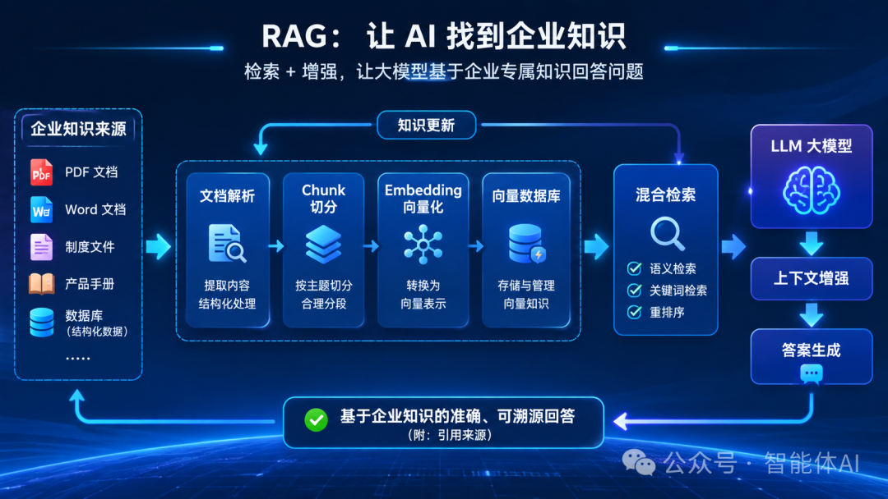
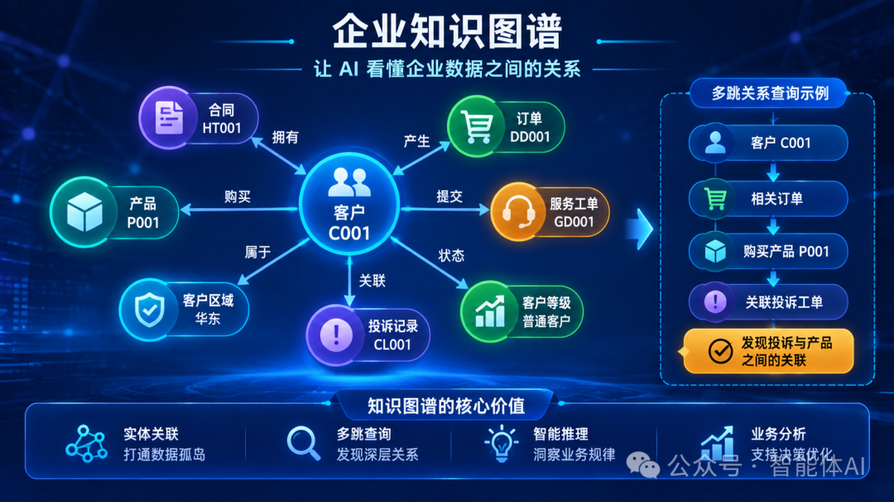
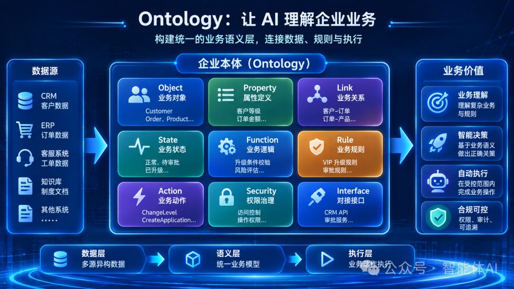
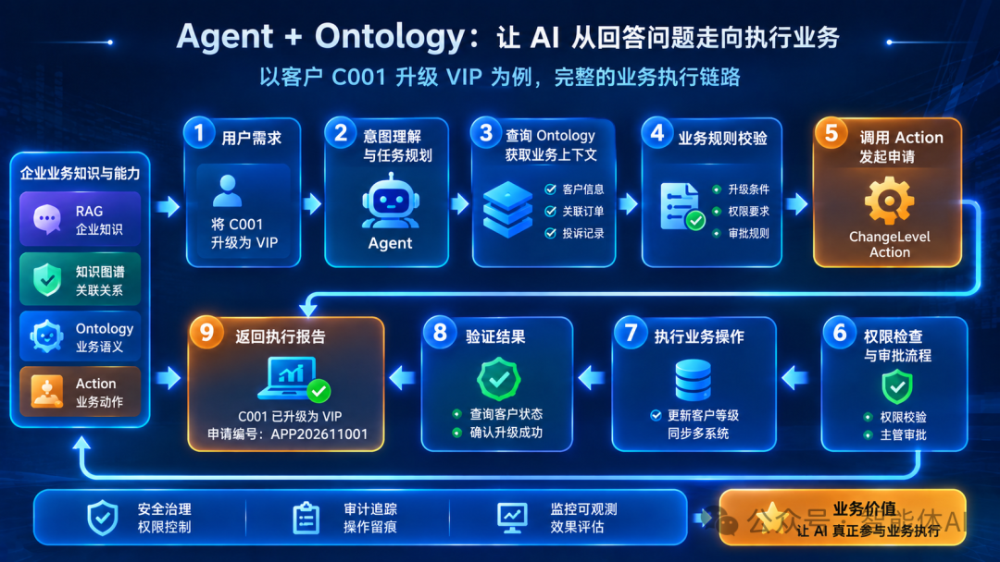
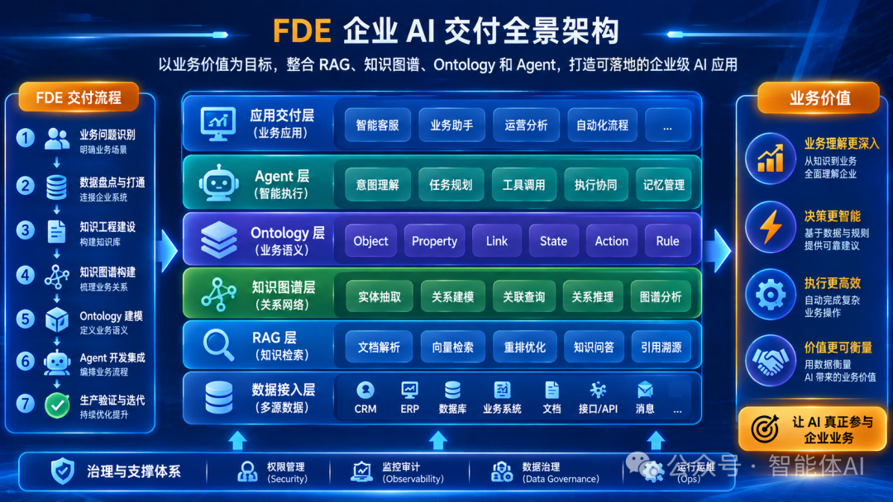

一文搞懂本体论（Ontology）驱动的 FDE 交付模式：RAG、知识图谱、Ontology 和 Agent
来源：微信公众号 归档日期：2026-11-21 抓取状态：成功 原文字符：14265｜配图：5 张
摘要速览
- 群同步待补摘要 · 微信公众号
核心内容
（待补充）
可执行启发
（待补充）
我的想法
（待补充）
原文沉淀
目录
- 为什么企业 AI 做了 RAG，还是无法真正处理业务？
- 知识图谱，让 AI 看懂企业数据之间的关系
- 知识图谱到底是什么？
- 知识图谱能解决什么问题？
- RAG 和知识图谱可以结合吗？
- 知识图谱还缺少什么？
- Ontology，把企业数据组织成真正的业务模型
- Ontology 的核心是业务对象
- Link，把数据库外键变成业务关系
- Property 和 State，让 Agent 知道业务对象当前处于什么状态
- Action，让 Ontology 从查询走向业务执行
- Function、Rule 和 Security，让业务动作受到约束
- 用一张图理解 Ontology 的完整模型
- Agent + Ontology，让 AI 参与业务执行
- 传统 Tool Calling 与 Ontology 驱动执行
- 完整案例，Agent 如何完成 C001 的 VIP 升级申请？
- FDE，如何把这四种技术交付给企业？
- FDE 如何设计完整的企业 AI 架构？
- FDE 的七个交付阶段
- 企业落地最容易踩的五个坑
- 企业应该如何分阶段建设？
- 总结
回答一个问题容易，难的是让 AI 真正跑完一单业务。一句「帮 C001 升级 VIP」，背后是数据、关系、规则、权限与交付的五道关卡。
企业做 AI 项目，经常会遇到这样一个问题。
知识库已经建好了，RAG 也接上了，大模型能够回答制度问题、查询产品资料，甚至可以根据用户的问题生成一份业务分析报告。可一旦用户提出一个真正的业务需求，系统就开始遇到麻烦。
例如，用户说：
「帮我分析客户 C001 最近为什么投诉增加，如果符合 VIP 客户升级条件，就帮我发起升级申请。」
这句话听起来很简单。可要让 AI 真正完成它，背后涉及多少事情？
它得先找到 C001 对应的客户资料，再查这个客户最近的订单、合同和服务工单。投诉记录可能在客服系统，订单在 ERP，客户等级在 CRM，VIP 升级制度则保存在企业知识库里。
接下来还要判断客户是否符合升级条件，当前用户有没有申请权限，是否需要主管审批。审批通过以后，还得调用 CRM 接口完成变更，并确认系统里的客户等级已经更新。
「这已经远远超出了普通知识问答的范围。」
我最近一直在关注企业级 AI 架构和 FDE 的工程交付模式，把能找到的论文和 Palantir 这类公司的公开资料对了一遍。把 RAG、Knowledge Graph、Ontology 和 Agent 放在一起看，会发现它们各管一条业务链路上的一段。RAG 负责找到知识，知识图谱把分散的业务实体关联起来。再往后，Ontology 负责描述业务对象、规则和动作，Agent 理解任务并组织执行，FDE 把这些能力接进客户现有的系统，让整个流程跑起来。
这篇文章就拿客户 C001 升级 VIP 这个场景，把整套技术和交付过程拆开讲清楚。
📌 本文看点
01
RAG 能查知识，难跑业务
02
Ontology 组织业务模型
03
FDE 七阶段现场交付
01
WHY RAG IS NOT ENOUGH
为什么企业 AI 做了 RAG，还是无法真正处理业务？
先看一个常见的企业 AI 项目。
企业把内部制度、产品手册、操作规范、历史项目文档上传到知识库，通过 Embedding 将文档转换成向量，再存入向量数据库。员工提问时，系统检索相关内容，把检索结果交给大模型，由模型生成回答。
整个过程看起来已经比较完整。传统 RAG 的执行过程大致如下。

RAG 很适合解决企业知识检索问题。员工想查询差旅报销制度，客服想查找产品故障处理手册，销售想了解某个产品的技术参数，运维人员想查询历史故障处理记录，管理人员想检索某项业务制度。
这些任务有一个共同点，答案主要存在于企业文档和知识资料中。但 C001 的 VIP 升级问题就复杂得多。假设企业有四套业务系统。
| 系统 | 存储的数据 |
|---|---|
| CRM | 客户基本信息、客户等级 |
| ERP | 订单、合同、交易记录 |
| 客服系统 | 投诉记录、服务工单 |
| 知识库 | VIP 升级制度、业务规范 |
用户提出问题后，系统至少要完成几项工作。系统要先找到客户 C001，确认客户身份，再从 ERP 查询最近的订单和合同，从客服系统查询投诉记录，再从知识库检索 VIP 升级政策。拿到这些信息以后，还得把它们关联起来，判断投诉是否与某个产品有关，客户是否达到升级标准。
即使大模型成功检索到了 VIP 升级制度，它也未必知道 C001 当前的真实客户等级，更不知道这个客户是否存在未处理的服务工单。
💡 原因很直接：RAG 检索到的是知识内容，企业业务运行时产生的数据和状态还需要另外获取。
这里涉及一个容易被忽略的区别。企业知识库里保存的 VIP 升级制度，描述的是业务规则的文本表达；CRM 里的客户等级，描述的是某个客户当前的业务状态。两者不能混为一谈。
知识库里的 VIP 制度
业务规则的文本表达
CRM 里的客户等级
客户当前的业务状态
如果企业只建设 RAG，系统可以解释 VIP 升级制度，却很难独立完成一次完整的客户升级申请。
「这也是很多企业 AI 项目从知识问答走向业务自动化时，遇到的第一道坎。」
02
KNOWLEDGE GRAPH
知识图谱，让 AI 看懂企业数据之间的关系
客户资料、订单、合同、产品和投诉记录分散在不同系统中。即使每套系统都能正常查询，AI 仍然面临一个问题，怎样知道这些数据之间存在什么业务关系？这就要讲到知识图谱（Knowledge Graph）。

知识图谱到底是什么？
知识图谱的基本结构由实体、关系和属性组成。举个简单例子。企业有一个客户 C001，这个客户购买了产品 P001，签订了合同 HT001，同时提交过多个服务工单。可以把它表示为一张关系图。
Customer C001
↓
拥有
Contract
HT001
购买
Product
P001
提交
ServiceTicket
GD001
ServiceTicket GD001 涉及 Product P001
这里的 Customer、Contract、Product、ServiceTicket 都是实体。客户拥有合同、购买产品、提交工单，则构成实体之间的关系。每个实体还可以拥有自己的属性。
Customer C001
customer_id: C001
customer_name: 某某科技有限公司
customer_level: 普通客户
customer_region: 华东
customer_status: 正常
知识图谱把这些实体及其关系组织起来，形成一张可以查询和分析的关联网络。
知识图谱能解决什么问题？
继续看 C001 的案例。假设用户问：
「C001 最近投诉增加，是否与产品 P001 有关？」
传统数据库查询可能需要跨多个业务表，通过客户 ID、订单 ID、产品 ID 和工单 ID 一层层关联。知识图谱可以从 Customer C001 出发，沿着业务关系查找相关对象。
Customer C001
↓
关联订单 Order
↓
订单购买 Product P001
↓
产品关联 ServiceTicket
↓
查询投诉记录
↓
统计投诉变化
如果图谱中的关系和数据足够完整，系统就可以进一步分析，哪些订单涉及产品 P001，哪些工单与 P001 有关，这些工单是否集中在某个时间段，是否存在同一产品批次的集中投诉，哪些客户受到影响。
💡 这种跨实体、多跳关系查询，正是知识图谱比较擅长的场景。
RAG 和知识图谱可以结合吗？
可以，这也是 GraphRAG值得关注的原因。2024 年，微软研究团队发布了论文 From Local to Global: A Graph RAG Approach to Query-Focused Summarization，介绍了利用知识图谱增强检索和全局问题回答的方案。
GraphRAG 的做法，是从非结构化文本中提取实体和关系，建立图结构，再结合社区划分、摘要和检索机制回答问题。它可以处理两类比较典型的问题。
局部问题
某个客户与哪些合同、订单、产品有关
全局问题
近期投诉集中在哪些产品和业务领域
传统向量检索通常更关注与问题相似的文本片段。GraphRAG 则可以借助实体关系和社区摘要，帮助模型处理更复杂的关联问题。
知识图谱还缺少什么？
回到 C001。现在系统已经知道，C001 是一个客户，拥有合同 HT001，购买了产品 P001，提交了工单 GD001。这些信息已经可以帮助 AI 理解客户与其他业务实体之间的关系。但用户接下来要做的是升级 VIP，系统还要回答一串问题。
1
VIP 升级的业务条件是什么？
2
客户当前状态是否允许升级？
3
哪些用户可以发起升级？是否需要主管审批？
4
升级成功后，应该修改哪个业务对象？
5
变更结果如何同步到其他系统？
这些问题已经涉及企业的业务语义、规则、状态和执行机制。知识图谱可以表达关系，也可以扩展规则和约束，但单靠一张实体关系图，并不能自动形成完整的企业业务执行体系。
这就轮到 Ontology 出场了
03
ONTOLOGY
Ontology，把企业数据组织成真正的业务模型
Ontology 翻译成中文通常叫本体论。在人工智能、知识工程和企业软件领域，它有不同的理论背景和具体实现。这里讨论的是企业软件中的 Operational Ontology，也就是面向业务运营的本体模型。

我比较认可 Palantir 对 Ontology 的工程化实践。在 Palantir Foundry 的体系里，Ontology 承担企业数据与业务应用之间的业务语义层和操作层职责，把数据、业务逻辑、动作以及安全治理联系起来。
Ontology 的核心是业务对象
先看 CRM 系统。数据库里可能有一张 customer 表。
...sql
CREATE TABLE customer (
customer_id VARCHAR(32),
customer_name VARCHAR(128),
customer_level VARCHAR(32),
customer_status VARCHAR(32),
region_code VARCHAR(32)
);
对于数据库开发人员来说，这是一张普通的数据表。但业务人员关心的是客户。他想知道客户叫什么、属于哪个区域、当前是什么等级、有哪些合同、购买过什么产品、是否存在未处理投诉。Ontology 可以将底层数据映射为一个 Customer Object。
Customer Object
PROPERTY 属性
customer_idcustomer_namecustomer_levelcustomer_statusregion
LINK 关联
→ Order→ Contract→ Product→ ServiceTicket
这样，Agent 面对的是统一的 Customer 业务对象，不必直接理解 CRM、ERP 中每张表的字段和关联方式。
！踩坑提示 🕳
建 Object 并不是把数据复制一份到新的数据库。它通常要定义数据映射、主键、属性来源、数据类型、更新机制和访问方式，底层数据仍然可能来自不同业务系统。这一点在工程上很容易想岔，值得先说清楚。
Link，把数据库外键变成业务关系
企业里有很多外键关系。
foreign key
customer.id
↓
order.customer_id
↓
contract.customer_id
数据库可以通过外键关联数据。但业务人员关心的问题是，一个客户拥有哪些订单？一个订单对应哪个合同？一份合同包含哪些产品？哪些投诉来自某个产品？某个产品影响了哪些客户？Ontology 通过 Link 定义这些业务关系。
Customer
hasOrder→ Order
hasContract→ Contract
purchases→ Product
hasTicket→ ServiceTicket
这样，Agent 可以围绕业务对象查询关系，不必自己拼接大量 SQL。
Property 和 State，让 Agent 知道业务对象当前处于什么状态
企业业务对象通常具有动态状态。例如 Customer。
Customer C001 · State
客户等级：普通客户
客户状态：正常
信用状态：良好
投诉状态：待处理
升级状态：未申请
这些字段有些是普通属性，有些代表业务状态。区别很重要。普通属性描述客户的静态信息，State 则反映业务流程中不断变化的状态。例如客户升级流程。
普通客户
↓
待申请
↓
审批中
↓
审批通过
↓
VIP 客户
Agent 只有获得当前状态和状态转换规则，才有条件正确判断下一步能做什么。
Action，让 Ontology 从查询走向业务执行
这是 Ontology 最值得企业关注的部分。前面的 Object 和 Link 主要解决业务对象与关系的问题，Action 则定义围绕业务对象可以执行什么操作。
Customer Object
↓
ChangeLevel Action
customer_idtarget_levelreasonapplication_id
用户要求将 C001 升级为 VIP，Agent 就可以选择 ChangeLevel 这个业务动作。
💡 Action 不应该只是一个裸 API。一个要用在生产环境的 Action，还得明确输入参数、前置条件、执行主体、权限、业务规则、审批要求、执行结果和失败处理。
Function、Rule 和 Security，让业务动作受到约束
例如企业规定，客户升级 VIP 必须满足下面这些条件。
VIP 升级必须满足的条件
✓ 客户状态正常
✓ 最近 12 个月累计消费达到规定门槛
✓ 不存在未处理的重大投诉
✓ 当前客户等级允许升级
✓ 申请人具备相应权限
可以把业务规则表达成程序逻辑。
...python
def can_upgrade_to_vip(customer, orders, tickets):
if customer["status"] != "ACTIVE":
return False
total_amount = sum(
order["amount"]
for order in orders
if order["status"] == "COMPLETED"
)
if total_amount < 100000:
return False
has_major_ticket = any(
ticket["severity"] == "MAJOR"
and ticket["status"] != "CLOSED"
for ticket in tickets
)
if has_major_ticket:
return False
return True
！踩坑提示 🕳
这段代码只是一个业务规则示例，实际项目还要处理统计周期、退款金额、币种、订单重复计算等细节。
权限校验也必须由可信的后端执行环境完成。
用户身份认证
↓
检查客户对象访问权限
↓
检查 ChangeLevel 执行权限
↓
业务规则校验
↓
判断是否需要审批
↓
执行 Action
↓
记录操作日志
「LLM 可以提出操作请求，却不能自己宣布权限校验通过。企业级 Ontology 与普通知识问答系统的分野，恰好就落在这一条上。」
用一张图理解 Ontology 的完整模型
把前面的内容放在一起，可以得到一套企业业务模型。

Ontology
↓
Object
Property
Link
Relationship
Function
Business Logic
↓
State
↓
Rule
↓
Action
↓
Permission / Security
↓
Execution
↓
Enterprise Systems
实际平台的概念划分会有所不同。例如 Palantir 的 Ontology 模型还包含 Interface 等概念，不能把上面的简化图理解为所有产品都必须遵循的固定规范。但从企业工程交付角度看，这张图已经把关键问题交代清楚了。
Ontology 要做的，是让企业数据拥有统一的业务含义，让业务关系可以查询，让业务规则可以复用，同时让业务动作能够在受控条件下执行。到这里，Agent 才有了理解企业业务的基础。
04
AGENT EXECUTION
Agent + Ontology，让 AI 参与业务执行
现在回到最初的需求。用户说：
「帮我分析客户 C001 最近为什么投诉增加，如果符合 VIP 客户升级条件，就帮我发起升级申请。」
如果只使用传统 Agent，执行过程可能是这样的。
用户提出需求
↓
Agent 理解意图
↓
LLM 选择 Tool
↓
调用查询客户 API
↓
调用查询订单 API
↓
调用查询投诉 API
↓
LLM 分析结果
↓
调用升级客户 API
这种方式可以工作。但随着业务复杂度增加，Agent 需要了解越来越多的 API、字段、参数和调用顺序。
某个接口返回的客户等级字段叫 cust_level，另一个系统叫 customer_grade。订单状态可能有待支付、已支付、已完成、已退款等多种取值，Agent 还得知道哪些状态可以纳入消费金额统计。
这些业务细节如果全部放进 Prompt 或工具描述里，系统很快就会变得难以维护。Ontology 可以给 Agent 提供一套统一的业务接口。
传统 Tool Calling 与 Ontology 驱动执行
传统 Tool Calling 的路径是这样。
Agent
↓
Tool / Function
↓
API
↓
Enterprise System
Agent 主要根据工具描述选择函数，再传入参数。Ontology 驱动的业务执行则要走完更长的链路。
用户业务目标
↓
Agent 理解意图
↓
查询 Ontology
↓
获取 Customer Object
↓
读取业务关系与当前状态
↓
调用 Business Function
↓
校验 Business Rule
↓
申请 ChangeLevel Action
↓
Permission Check
↓
Approval Workflow
↓
执行后端业务接口
↓
验证执行结果
两种方式并不冲突。Ontology 中定义的 Action，底层完全可以通过 API、Function、领域服务、Workflow 或事件机制实现，Agent 也可以通过工具调用访问这些 Action。关键是工具背后的业务定义和执行约束是否足够完整。
Tool
描述技术能力
Action
描述业务操作及其约束
完整案例，Agent 如何完成 C001 的 VIP 升级申请？
我们把整个过程拆开看。
STEP 01Agent 理解用户意图
目标：分析 C001 最近投诉增加的原因。
附加任务：如果符合 VIP 升级条件，发起升级申请。
STEP 02Agent 查询 Ontology
Customer C001
PROPERTY
customer_levelcustomer_status
LINK
→ Order→ Contract→ ServiceTicket
STEP 03获取业务数据
Agent 通过 Ontology 查询客户订单、投诉工单和产品关联信息，分析投诉变化。
STEP 04查询 VIP 升级规则
通过 RAG 检索企业 VIP 升级制度，再由业务规则服务根据实际数据执行资格校验。这里要区分两种信息来源。
制度文件
说明业务政策
规则服务
执行确定性的判断
不能仅凭大模型阅读一段制度，就认定客户已经满足升级条件。
STEP 05调用 ChangeLevel Action
如果满足条件，Agent 创建升级申请。
...json
application = {
"customer_id": "C001",
"target_level": "VIP",
"reason": "符合客户升级条件",
"source": "AI_AGENT"
}
STEP 06执行权限和审批校验
后端检查当前用户是否拥有申请权限，并根据企业制度判断是否需要主管审批。
STEP 07验证结果并反馈
审批完成后，业务系统执行等级变更，返回执行状态。Agent 再次查询 Customer Object，确认客户等级是否已经更新。最后向用户反馈。
客户 C001 分析完成
投诉情况：近期投诉主要集中在产品 P001
升级资格：符合 VIP 客户升级条件
申请状态：已提交，等待主管审批
申请编号：APP202611001
这里的申请编号只是示例。但有一处必须较真。
💡 Agent 返回「已提交」，必须有真实业务系统的执行回执作为依据。审批中不能报告为升级成功，接口超时也不能直接认定操作失败。对于不确定的执行结果，还要通过业务流水号进行查询，避免重复提交。
这套流程，才比较接近企业实际需要的业务 Agent。
05
FDE DELIVERY
FDE，如何把这四种技术交付给企业？
前面讲了四种技术。接下来要回答一个更实际的问题，谁来把它们整合起来？这里就涉及 FDE。FDE 全称 Forward Deployed Engineer，通常翻译为前沿部署工程师，也有人称前线部署工程师。

Palantir 是 FDE 这一岗位模式受到广泛关注的代表企业。其岗位描述强调工程师深入客户现场，理解客户问题，开发软件和 AI 工作流，并对实际交付结果负责。FDE 的工作通常横跨业务分析、软件开发、数据工程和客户现场交付。
以 C001 为例。企业客户提出了客户投诉分析和 VIP 升级需求，FDE 不能只接到需求就开始写 Prompt。他得先搞清楚客户的数据在哪里，系统之间怎样关联，VIP 升级规则由谁维护，审批流程怎样走，操作失败由哪个系统负责。这些问题没有弄清楚，Agent 即使能够生成一份看起来很专业的分析报告，也无法可靠地完成业务操作。
FDE 如何设计完整的企业 AI 架构？
可以把前面四种技术放在一张图中。从工程角度，可以划分为六个部分。
| 架构层 | 核心技术 | 主要职责 |
|---|---|---|
| 数据接入层 | API、数据库、ETL、消息 | 接入 CRM、ERP、客服等系统 |
| 知识层 | RAG、Embedding、Vector DB | 文档解析、检索与知识问答 |
| 关系层 | Knowledge Graph | 实体抽取、关系建模、关联查询 |
| 语义层 | Ontology | Object、Property、Link、State、Rule |
| 执行层 | Agent、Action、Workflow | 意图理解、任务规划、业务操作 |
| 治理与应用层 | Security、Audit、Monitoring | 权限、审批、审计、监控和业务界面 |
六层是逻辑架构，不代表一定要部署六套独立平台。知识图谱可以和 RAG 共用一套知识处理管道，Ontology 可以复用企业主数据，Agent 和 Action 可以部署在同一个业务应用平台中。
FDE 设计架构时，要根据客户现有系统、数据规模、业务复杂度和交付成本做取舍。
FDE 的七个交付阶段
FDE 项目通常从客户业务问题开始。我把它整理成七个工程阶段。
阶段 01业务问题识别
FDE 进入客户业务现场，和业务负责人、系统负责人、实际操作人员沟通。以 C001 为例，需要确认下面这些事：客户投诉增加是否影响 VIP 升级？投诉分析需要哪些数据？VIP 升级条件由哪个部门制定？申请和审批分别由谁负责？最终业务结果如何衡量？
这一阶段要形成明确的业务范围、验收标准和责任边界。
阶段 02数据盘点与系统打通
梳理 CRM、ERP、客服系统和知识库。这里往往会遇到一个非常实际的问题。
！踩坑提示 🕳
CRM 中客户 ID 是 C001，ERP 中可能使用客户编码 KH0001，客服系统又使用另一个客户编号。如果没有统一映射，系统即使能查询每套数据，也无法准确关联同一个客户。
FDE 要处理主数据映射、字段口径、数据质量、接口认证和数据同步机制。
阶段 03企业知识工程
建设 RAG 知识库，把 VIP 升级制度、客服规范、产品文档和业务操作手册进行解析、切分、索引，同时处理文档版本、知识更新、来源引用和访问权限。
！踩坑提示 🕳
尤其要注意制度的生效时间。如果企业已经发布新版 VIP 升级政策，Agent 不能继续使用旧版制度判断客户资格。
阶段 04知识图谱建设
根据客户业务场景定义核心实体和关系。
Customer
↓
Order
↓
Product
↓
ServiceTicket
↓
Complaint
FDE 还要处理实体对齐、关系抽取、数据更新和关联查询。知识图谱的质量取决于数据来源和关系定义。关系抽取可以借助大模型，但关键业务关系最好经过规则校验或业务人员确认。
阶段 05Ontology 建模
围绕核心业务对象建立 Ontology。
OBJECT
CustomerOrderProductServiceTicket
LINK
Customer → OrderCustomer → ContractCustomer → ServiceTicketOrder → Product
ACTION
ChangeLevelCreateUpgradeApplication
RULE
VIPUpgradeEligibility
同时定义对象属性、业务状态、Function、权限和审批要求。这一阶段的成果应该能够被 Agent 和业务应用直接使用。
阶段 06Agent 开发与集成
把业务目标交给 Agent。Agent 负责理解意图、拆解任务、查询业务对象、选择 Action，并根据执行结果决定下一步。工程实现还要处理不少事情。
多轮任务状态管理工具调用参数校验超时和重试幂等控制人工审批异常恢复执行结果验证
💡 对于涉及资金、客户权益和关键业务状态的操作，建议设置明确的人工确认机制。
阶段 07生产验证与持续迭代
上线以后，FDE 还要持续观察系统运行情况。
| 指标 | 验证内容 |
|---|---|
| 检索准确率 | 是否找到正确的制度和文档 |
| 数据关联准确率 | 是否关联到正确客户和订单 |
| 规则判断准确率 | 是否符合实际业务政策 |
| Action 成功率 | 业务动作是否正确执行 |
| 审批合规率 | 是否遵循企业审批制度 |
| 任务完成率 | 用户提出的任务是否真正完成 |
💡 有一件事在这一步最容易被放过：Agent 最终回复得再流畅，也不能代表业务执行成功。
生产环境必须把模型输出、工具调用记录、后端执行回执和最终业务状态分开记录。
06
FIVE PITFALLS
企业落地最容易踩的五个坑
技术架构设计得再漂亮，落地时仍然可能遇到很多问题。结合前面的工程链路，有五个问题值得提前处理。
坑 01把 RAG 当成企业 AI 的全部
企业上传了几万份文档，建好了向量数据库，就认为 AI 已经掌握了企业知识。
实际上，文档知识和实时业务数据有很大区别。制度文档可以通过 RAG 获取，客户当前等级、订单状态和审批结果则要从业务系统查询。两种数据应该分别设计获取和更新机制。
坑 02把知识图谱等同于 Ontology
知识图谱可以描述实体和关系，也可以扩展属性、规则和约束。Ontology 则进一步强调业务概念的形式化定义，以及对象、状态、动作和治理机制之间的联系。
两者有交集，也可以结合使用。如果项目只完成了实体关系建模，却没有定义业务状态、规则和 Action，Agent 仍然无法可靠地完成业务操作。
坑 03只建 Object，不建 Action
有些项目花了大量时间定义 Customer、Order、Product 等业务对象。Agent 能够查询客户信息，也能找到关联订单。
但用户提出修改客户等级时，系统没有统一的业务动作定义。开发人员最后又回到直接调用底层 API。
这样 Ontology 的业务执行能力就没有发挥出来。
坑 04让 Agent 直接操作数据库
这是企业 AI 项目中需要重点避免的设计。例如，Agent 根据用户指令直接生成 SQL。
...sql
UPDATE customer
SET customer_level = 'VIP'
WHERE customer_id = 'C001';
这条 SQL 看起来没有问题，但它绕过了客户升级规则、权限检查、审批流程和业务事件。一旦 Agent 判断错误，影响可能直接落到生产数据上。
更合理的做法是通过受控的业务 Action 执行变更，由后端负责校验和事务处理。
坑 05只验证 PoC，没有验证生产运行
PoC 阶段通常只关注模型能否理解问题、能否生成正确答案。
真正上线以后，还会出现其他问题。数据是否及时更新？同一个 Action 重试会不会重复执行？接口超时后怎样确认真实执行状态？审批拒绝后怎样恢复任务？用户是否能够看到完整操作记录？模型更换后，业务规则是否仍然有效？
这些问题决定了企业 AI 系统能否长期稳定运行。FDE 的工程价值，就体现在这些具体问题上。
07
PHASED ROADMAP
企业应该如何分阶段建设？
看到这里，有些企业可能会觉得，RAG、知识图谱、Ontology、Agent 都要建设，项目是不是会变得非常复杂？
我的建议是从一个明确的业务场景开始。先把一条业务链路跑通，再扩展到其他业务领域。
阶段 01知识增强
先解决企业知识获取问题。建设 RAG，打通文档来源，做好知识清洗、检索、权限过滤和引用溯源。
这一阶段适合从制度问答、客服知识助手、技术文档检索等场景切入。
阶段 02业务语义统一
选择一个核心业务领域，梳理 Customer、Order、Contract、Product 等对象，处理跨系统主键映射，建立业务关系，逐步形成 Ontology。如果业务存在复杂关联分析，可以引入知识图谱。
这一阶段重点验证业务对象是否统一、关系是否准确、状态是否可信。
阶段 03业务自动化
在已经建好的业务模型上开发 Agent。先从查询和分析类任务开始，再逐步开放低风险 Action。涉及客户权益、财务数据和重要业务状态的操作，加入权限校验、审批和人工确认。
等执行结果、异常处理和审计机制成熟以后，再逐步扩大自动化范围。
这条路线还有一个好处。企业每个阶段都能看到实际成果，不必等到整个 AI 平台建设完成才开始创造业务价值。
∞
THE END
总结
回到文章开头的 C001。
用户只提出了一句话，希望 AI 分析客户投诉，并在符合条件时发起 VIP 升级申请。这句话背后，涉及企业知识、客户数据、业务关系、业务规则、执行权限和审批流程。RAG 找制度，知识图谱连数据，Ontology 把这些数据组织成有状态、有规则、有动作的业务模型，Agent 在模型之上组织查询和执行，FDE 负责把这一整套东西在客户现场立起来。
我认为，企业 AI 的一个重要变化，正在于 Agent 开始从知识问答走向业务操作。模型可以不断升级，工具也会不断增加，但企业的客户、订单、合同、产品、权限和业务规则始终需要清晰的定义。这是 Ontology 值得投入的地方。
「C001 的升级申请最后能不能提交，取决于有没有人愿意把主数据映射、状态口径和审批链路这些不体面的活干完。模型聪明不聪明，排在这些活后面。」
END
归属：[[02-输入/按主题/AI与效率/_index|AI与效率]]